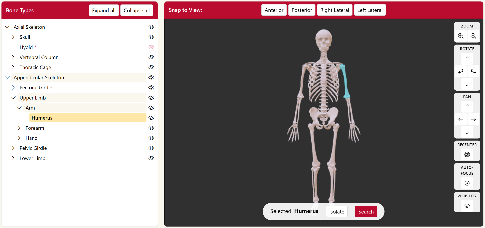
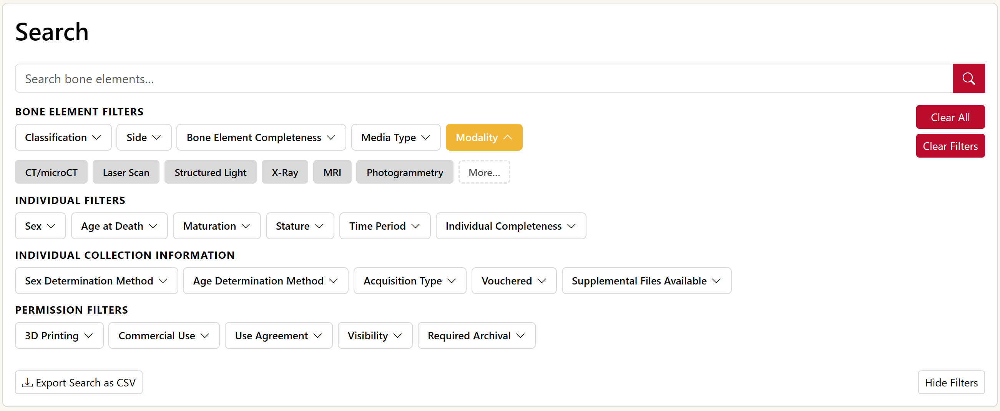
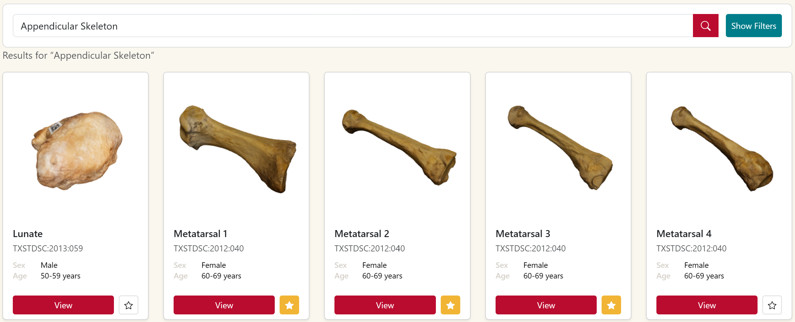
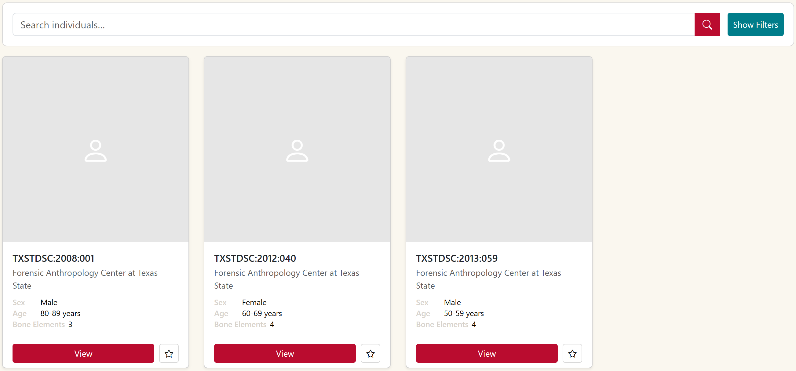
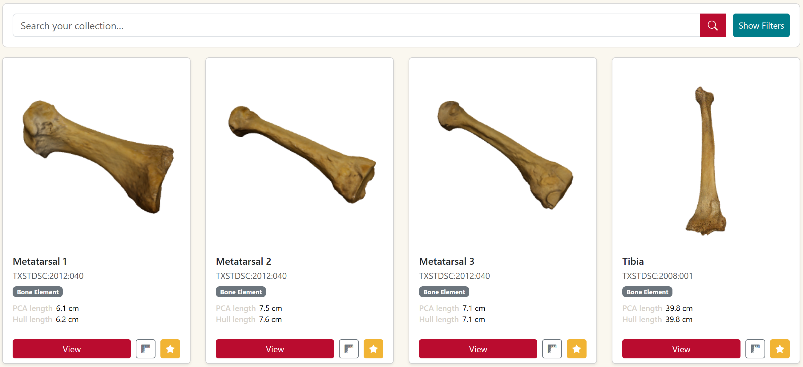
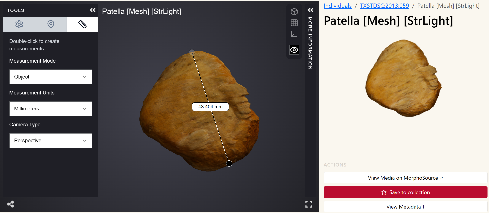

Creating a Global, AI-Competent Image Library of Human Skeletal 3D Models
Abstract
We are creating a searchable online library of high-resolution, ethically-sourced human skeletal 3D models to improve the sharing and generation of data between anthropologists, while developing an accessible way for researchers and students to find and analyze specimens in virtual space using digital tools. Unlike many physical skeletal collections assembled from marginalized communities without proper consent, our library is comprised of individuals who donated their bodies to scientific research. Access to skeletal data has historically been limited to major universities and those with the right professional connections and resources to travel long distances to the physical collections. By circumventing these barriers, our project and its integration with automated measurement extraction and supervised machine learning models for biological feature classification will help advance scientific understanding of human skeletal variation. Furthermore, it will allow for the creation of new models and theories in the fields of human evolution, biological anthropology, archaeology, forensics, and biomedical research.
Background
Research in anthropology has traditionally relied on access to physical specimens of human skeletons to study human variation through time and space. Accessing collections and collecting data are both time consuming and costly, limiting the study of human variation for researchers, and especially for students. Researchers must travel vast distances to access specimens and may only have access to those specimens for a brief period of time. Students are often even more limited because their educational quality depends on whether their institution can afford to pay thousands of dollars for skeletal models to teach students the nuances of the human skeleton. Prior to 2020, many teaching collections in the United States (and other countries with colonial histories) were unethically sourced and have rightfully been removed from curriculums, but their absence means that students cannot develop practical experience, preventing them from conducting certain types of research for their careers where a more profound expertise is required. WashU has discontinued use of its own teaching collection, part of the Terry Collection, and our project will allow students to gain the experience they need in an ethical manner, with the generous contribution of individuals who donated their remains for scientific research and learning. Providing students of all backgrounds a way to learn about anthropology will allow for more diverse viewpoints and new breakthroughs in our understanding of human evolution.
The website provides a search function that allows researchers to identify suitable bone elements using a series of specifically designed filters, create collections and conduct supervised machine learning (ML) analyses. No such portal exists at the moment, as digital human remains collections are either only accessible through traditional data sharing methods in direct conversation with the home institution, while data repositories that contain human remains 3D models only contain few specimens with limited metadata and no search/filter functions specific to the human skeleton and osteological research. Therefore, our project offers to save valuable research time for identifying and assembling suitable images for analyses. Our pilot also includes tools for supervised ML similar to those that are currently being developed by researchers around the world independently; by linking ML tools directly to the portal itself, we are creating a unique bridge between data and analytics that enables users of different skill levels to access and generate data.
Features

Interactive 3D skeletal model

Organized search filters and CSV export

Supports categorical searches

Can search for both individuals and bone elements

Can save relevant specimens and run automated measurement extraction

MorphoSource's 3D viewer with analysis tools
Broader Impact
Ethical Data Sharing: In collaboration with MorphoSource, our project provides an open-access platform to upload and share 3D models and their metadata. Data sharing is only slowly becoming a standard in the field of anthropology as major external grant agencies require researchers to share their data through open-access repositories. Traditionally, researchers would access collections to collect visual and other data (metric, observational) that is stored on personal hard drives or data clouds and only shared upon request. This “proprietary” model of data “ownership” is no longer ethical or feasible in the 21st century. When it is ethical to do so, our website encourages researchers to share their data, with the understanding that contributions will be acknowledged in any research products that result from the data use. Our data sharing agreements require contributors to identify the type of consent or permission by which the data was obtained. We anticipate two types of data that can be shared ethically: images of human remains that have living consent or next-of-kin consent for research and educational purposes, as well as human remains from historical or archaeological collections that have been obtained with the appropriate permissions from governmental or community agencies.
Global Scope: Human remains collections are traditionally homogenous (compared to global human variation) as they represent individuals from a single time or place. Although comparative research has been conducted, many of the existing models used as standards in human evolution and forensics, for example, are population specific and cannot easily be applied to other populations. A global data sharing platform, such as the one designed by this project, will facilitate globally comparative research, allowing the creation of population-sensitive standards and new insights into phenotypical human variation.
Beyond Anthropology: The project's website and AI tools facilitate sharing and using data among a global community of researchers who are interested in human variation through time and space, including human evolution and ancestry studies, health and illness in past and present populations, and victim identification in forensic contexts. The trajectory of this project points to a time where users, after receiving permission, can upload their bone scans and have our classification algorithms estimate features. This technology would have significant forensic and medical implications. Forensic anthropologists examine skeletal remains from criminal investigations, missing persons cases, and disaster scenarios where they need to build a profile including features like age and sex. Given the labor cost and specialized expertise required for these assessments, they are not always possible. Having a validated web accessible tool to supplement these assessments when resources are low could significantly improve identification processes.
Equity
The project is designed to invite researchers from around the world as users and contributors. Data collection, analysis, and publication continues to follow neo-Colonial extractive patterns where researchers from the global North travel to the global South to conduct (permitted) research, often excluding local researchers and institutions from the down-the-line benefits of their work. With this tool, researchers could share their data publicly (or restrict public usage if desired by the institution), but more importantly, the AI tools available through our website would be accessible to interested researchers anywhere in the world, thus distributing the potential uses and benefits more equally than before.
Students are a critical audience in the design and impact of this project. Medical, anatomy, and forensic anthropology students rarely get hands-on time with skeletal remains, but this digital library will allow students to easily search for specific bones across a wide variety of criteria and explore 3D models in close detail without time, travel, or shipping concerns. Once the classification tool is complete, students can also benefit from testing their own judgements against the algorithm's. Forensic science and bioarcheology courses could integrate this resource into their curriculum, scaling up the scope of a collection that otherwise only researchers at a handful of universities would have access to. With the retirement of skeletal collections for teaching in 2020/21, there is now a generation of U.S. undergraduate and graduate students whose training in human osteology was not hands-on. This places the next generation of researchers in human evolution, forensics, archaeology, and related fields at a distinct disadvantage compared to our global peers.
Our project intends to mitigate this disadvantage and enhance students' education in several ways:
- Access to 3D Models: Data sharing will allow students and instructors at institutions of higher educations to access 3D scans suitable for 3D printing along with metadata that will be useful for instructional purposes (and has not been available traditionally with bone casts or other collections). Instructors will be able to tailor their teaching collections according to their specific needs or interests in human variation at the cost of printing specimens (rather than purchasing pricy bone casts or acquiring scanning equipment and access to donor collections).
- Digital Teaching Tools: Teaching osteology-related methods has, until recently, relied on the use of physical specimens to extract quantitative and qualitative data using observation and measurements. The next generation of research at the graduate and faculty-level, however, is already deeply involved with digital analysis tools. Our portal will provide open source data and basic tools for student learning which instructors can easily incorporate into more traditional curriculum of osteological training. Because students will have access to a primary data set much larger than typical teaching collections, potential understanding into global human variation and evolutionary processes at early career stages is much greater and does not require post-graduate access to collections.
- Ethical Awareness: Student users of our portal will be asked to agree to user terms that inform them of the ethical implications of human remains research, the different types of consent and permissions that are associated with the digital collections, and the required acknowledgements in any kind of publication resulting from the research (even at the level of course work). This step encourages conversation and discussion among next-generation researchers about the ethical challenges of human remains research.
At WashU, Human Osteology used to be offered in the Anthropology Department and was a service course geared towards Pre-Med students in Anthropology and Biology. This course has not been offered since 2021, but will be offered again in Fall 2027, taught by one of the project co-PIs (Baitzel or Prang) who will use the website and associated data as a teaching tool for bone identification and advanced analytical methods in biological anthropology and bioarchaeology. We envision similar uses of our website by peer institutions.
Next Steps
- Populate MorphoSource database with 3D models
- Build out collaborations with researchers and institutions
- Establish brand identity and publish official use/ethical guidelines
- Implement additional site features
- Expand automated measurement extraction and landmark placement to new bone types